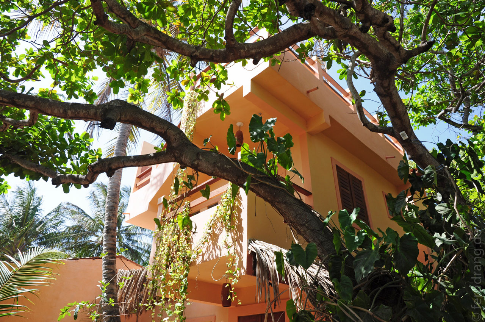
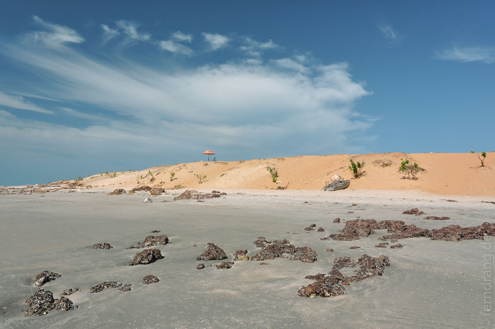
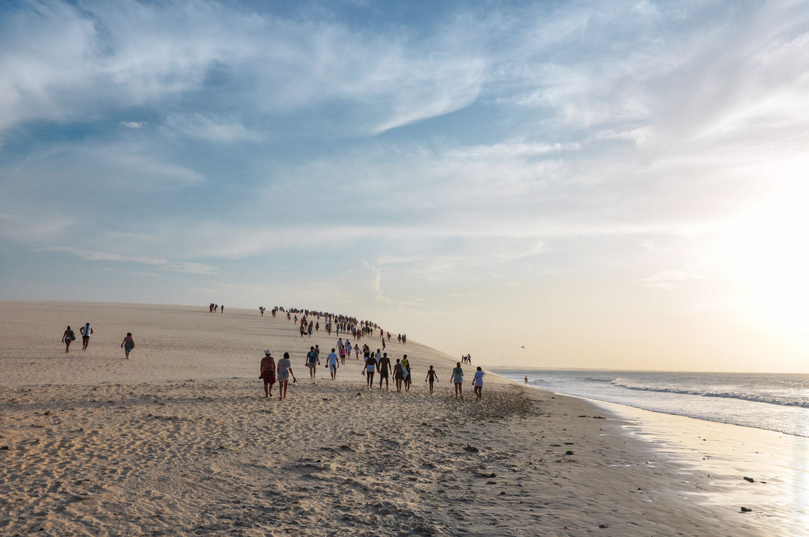
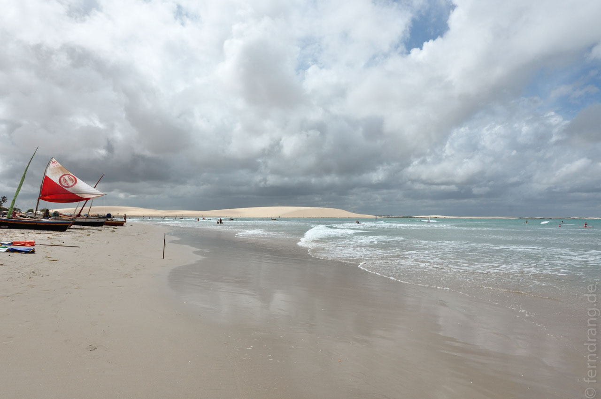

Endlich in Jeri! Oft merkt man erst wie weit es war, wenn das Ziel in Sicht ist. Auf den letzten Metern konnten wir es nach drei vollgepackten Wochen kaum abwarten mit dem Nichtstun zu beginnen. Dafür eignet sich der Ort sehr gut. Als es noch ein Fischerdorf war, war es sicher um einiges beschaulicher, aber heute ist Jeri nur noch für Touristen gemacht. In jedem Haus steckt ist ein Restaurant, eine Unterkunft, ein Reisebüro oder ein Geschäft. Die Straßen bestehen allesamt nur aus Sand, der hier allgegenwärtig ist, und nur einige davon sind groß genug für Autos.
In den Silvestertage sind Betten in Jeri heißbegehrt: Die Preise vervielfachen sich und alles ist proppenvoll. Mit etwas Glück hatten wir schon von zuhause aus ein Zimmer in Ingrids "Jeri Athome Guesthouse" ergattert. Die deutsch-brasilianische Wirtin hat den Anbau erst im November fertig gestellt, so dass alles nagelneu war. Das Zimmer mit Balkon war groß, das Frühstück gut und Ingrid wegen der Extrahochsaison total überdreht, aber sehr hilfsbereit. Wir wohnen zwar an der "Hauptstraße", die sich dadurch auszeichnet die mittlere der fünf Straßen von Jeri zu sein, aber weit genug vom lauten Strand-Trubel entfernt.
Zum Strand ist es in Jeri nirgendwo weit. Dort kann man den ganzen Tag wunderbar in der von keiner Palme getrübten Sommerhitze schmurgeln. Der Strand fällt so sanft ins Meer ab, dass man bei Ebbe 100m zum Wasser laufen muss. Den ganzen Tag über jagen die Windsurfer über die Wellen. In der Ferne sieht man die Kite-Surfer, die einen anderen Teil der Küste für sich in Beschlag nehmen. Das lässt schon erahnen, dass es extrem windig ist, was sich gleichzeitig als extrem sandig erweist. Abends kommt Flut und frisst fast den ganzen Strand. Dann kommen die Wellenreiter aus ihren Löchern und nutzen die Zeit bis es dunkel wird.
Um die heiß ersehnte Strand-Langeweile zu milden, haben wir uns Surfbretter geliehen und uns ordentlichen durchspülen lassen. Weil wir uns schwerlich als Wassersport-Autodidakten erwiesen haben, musste eine Schulstunde her. Das hat schwer geholfen – aber besser ist noch nicht gut. Es hat trotzdem Spaß gemacht und wird in der nächsten Urlaubsplanung berücksichtigt.
Jeden Abend folgen Hunderte dem Jeri-Ritual und pilgern auf die klug benannte Sunset Dune. Dort kann man den Sonnenuntergang im Meer sehen, was an der Westküste des Atlantiks eine Rarität ist. Auf dem Rückweg stehen am Strand auch schon die ersten Bar-Wägelchen bereit, die die Leute mit Caipirinha & co versorgen. Nach und nach baut sich eine ganze Straße von Ständen auf, bis ein freiwilliger Dorfbeschaller seine Schicht antritt und die Strandparty losgehen kann.
An Silvester ging dasselbe in einer anderen Dimension vonstatten. Wie überall wird es plötzlich schwierig einfach irgendwo essen zu gehen. Wir waren aber landesuntypisch früh unterwegs und konnten noch einen Platz ergattern und haben uns (auch landesuntypisch) mit köstlichem Cebiche und Guacamole verwöhnt. Langsam haben sich die Straßen mit weißen Gestalten gefüllt. In Brasilien begrüßt man das Neue Jahr eben ganz in weiß. Vielfach wurde der Dress-Code noch mit Gold aufgepeppt, was tolle Tron-Kostüme ergeben hat. Als es auf Mitternacht zu ging war die (ziemlich große) Düne schon voll und hat aus der Ferne von den zahllosen Blitzlichtern geglitzert wie ein Diamant. Zur Stunde Null ist dann das große Wettböllern zu beiden Enden des Strandes losgegangen, um die geschätzten 10000 oder mehr Gäste zu beeindrucken. Für ein kleines Dorf haben sich die Leute mit dem Feuerwerk wirklich nicht lumpen lassen. Wir haben dazwischen auf unserem Handtuch gesessen und das Neue Jahr mit Prosecco aus Plastikflöten und Panetone (beides Silvesterpräsente unserer Wirtin) begrüßt. Im Anschluss wurde der nächste Brauch gefeiert und die Leute sind einfach zum Neujahrsschwimmen ins Wasser marschiert. Bei 30 Grad ist das vermutlich naheliegender als an der Nordsee. Wegen der Ebbe mussten die Lemminge ziemlich weit laufen, was der Szenerie von ganz in Weiß Gekleideten, die langsam im dunklen Meer verschwinden, etwas Endzeitliches verliehen hat. Der Rest des Abends hat unter dem Kirmes-Charme gelitten, den die Saufbuden und schlechten DJs zusammen mit Tausenden Torkelnden versprüht haben.
   